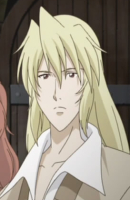
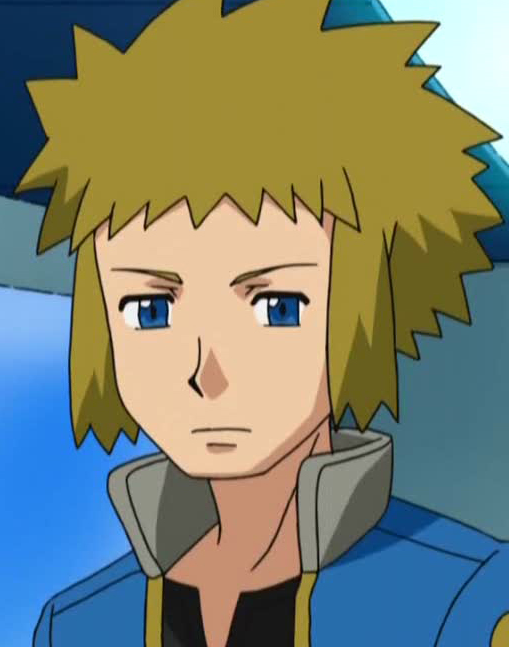

|
Elliot Nightray |
|
Elliot Nightray is the step brother of Gilbert and Vincent. He is hotheaded and outspoken, often acting crass towards people despite caring about them. |
|  |
Fransisco |
|
Francisco is childhood odf Curio and the intellectual of the duo. He is an expert at archery and other various thrown weapons. He is sly, sneak and Ladies' man. |
 |
Grant |
|
Grant is the gym leader of Cyllage City in Kalos and is an avid climber. He specializes Rock-type Pokemon. He enjoys rock climbing as one of his pastimes. |
| |
Kyle |
- Pokemon Diamond and Pearl
|
Kyle is a Pokemon Coordinator from the Sinnoh region. He is very confident and skilled Pokemon trainer. He is one of the strong coordinators in the Wallace Cup. |
|  |
Volkner |
- Pokemon Diamond and Pearl
|
Volkner is Gym Leader of Sunyshore City Gym of Sinnoh. He is not easily amused trainer. He is friends with Flint. |